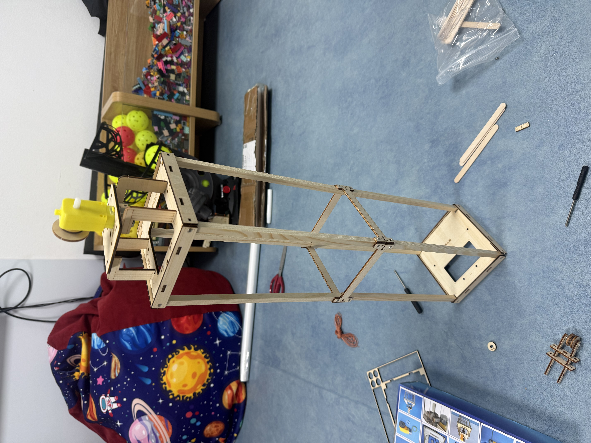

Action Research Report
Initial Implementation of the EdTech Coaching Program
Greenfield Preparatory Middle School · 2026–2027
What we are implementing and why
This document is the Action Research Report for the initial implementation phase of the EdTech Coaching Program at Greenfield Preparatory Middle School. It accompanies — and is read alongside — the full Learning Design Solution & Technology Implementation Plan (M42U4A1), which details the program's three-layer coaching architecture: weekly 1:1 coaching cycles, biweekly PLC data routines, and quarterly design thinking sprints.
The capstone implementation window covers Milestones M1–M4 (June–July 2026): securing admin approval and budget, completing the tool and license audit, building the Looker Studio coaching dashboard, and running a focused-group pilot of the coaching cycle with four self-selected teachers. This report documents artifacts collected during Week 1 of that implementation, reviews the relevant research literature through an action-research lens, and reflects on what is working, what is challenging, and what the literature suggests we adjust.
Capstone milestones — progress & status
The capstone window targets four milestones. Each is tracked below with a completion percentage, status badge, and link to the primary artifact.
The full Learning Design Solution & Technology Implementation Plan was submitted to and reviewed by Dr. Marisol Vega (Principal). Budget line items for Newsela subscription ($2,400), substitute coverage ($5,400), and prototype materials ($200) were approved within the existing EdTech line. The admin video talking points were drafted and shared. The document itself is the primary artifact for this milestone.
License inventory for Google Workspace, IXL, Desmos, EdPuzzle, GoGuardian, and PowerSchool is confirmed. Canva for Education training session was delivered as a PD artifact (see artifacts below). Newsela subscription quote is pending procurement. GoGuardian deployment status has been documented; training session is scheduled for August pre-service week.
The EdTech & Instructional Coaching Survey was built and deployed to capture baseline data from 18 teachers and 4 administrators. Survey infrastructure is live and functional. The Looker Studio data model has been scoped. Actual dashboard build is scheduled for Weeks 3–4. Survey results analysis page was created as a reporting artifact.
Initial pilot testing was conducted using a hands-on engineering/building activity (LEGO construction challenge) with a colleague to test the Plan → Observe → Reflect → Apply coaching cycle protocol. The session was audio-recorded and transcribed (see artifact below). Observations about ambiguous instructions, student patience, and peer coaching dynamics were captured. Coaching template documents have been drafted. Full pilot with four teachers begins Week 2.
Artifacts collected — Week 1 of technology implementation
Below is the complete catalog of artifacts gathered during the first week of the capstone implementation. Each artifact is mapped to its corresponding milestone and described with its purpose and the evidence it provides.
M1 — Admin Approval & Planning Documents
M2 — Tool Audit & PD Delivery
M3 — Dashboard & Data Infrastructure
M4 — Pilot Coaching Cycle Evidence
Implementation in action
The following photographs document the hands-on pilot coaching session — a collaborative LEGO/engineering construction challenge used to prototype the Plan → Observe → Reflect → Apply cycle with a teaching colleague before deploying it with the full pilot cohort.



Why a LEGO challenge? The pilot coaching session used a hands-on engineering construction activity as a low-stakes analogue for classroom instruction. The ambiguity of the instructions, the need for collaborative problem-solving, and the frustration-and-resolution cycle all mirror the real coaching dynamics the program targets. Key observations: participants naturally fell into coaching roles ("let me try this approach"), expressed frustration with unclear instructions (paralleling teachers' experiences with new tech tools), and discovered solutions through iteration rather than prescription — exactly the cognitive coaching philosophy the program is built on.
Five research articles supporting the action research
The following five articles were selected from a broader review of fourteen sources for their direct relevance to the three-layer coaching model (1:1 coaching, PLC data routines, and design thinking sprints) being implemented at Greenfield Prep. For each article, I present the key findings and conclusions, followed by a critical assessment of the research quality and its implications for our implementation.
Key Findings & Conclusions
- Main claim: Sustained, onsite instructional coaching — not one-shot workshops — moves teachers' technology use from drill-and-practice to higher-order critical thinking activities.
- Scale: The Dynamic Learning Project deployed dedicated coaches across 50 schools in multiple states, providing the largest controlled observation of EdTech coaching to date.
- Outcome shift: Teachers who received regular coaching moved from using technology primarily for substitution-level tasks (worksheets on screens) to designing lessons that required student analysis, creation, and collaboration.
- Sustainability: The authors conclude that coaching creates a multiplier effect — coached teachers begin coaching their peers, which scales impact without proportional increases in coaching staff.
- Policy implication: Districts should fund dedicated coaching positions rather than software licenses if the goal is pedagogical transformation.
Critical Assessment — Quality, Logic & Evidence
This study has the considerable advantage of scale: 50 schools across multiple states provides a breadth of context that most EdTech research lacks. The logic is sound — the authors control for the common confound of technology access by ensuring all schools have comparable device ratios, isolating coaching as the independent variable. However, I note two limitations. First, the study is primarily observational and programmatic rather than experimentally controlled; there is no randomized assignment of coaching vs. non-coaching conditions, which means selection bias (schools that volunteer for coaching may already be more receptive to change) cannot be fully ruled out. Second, the outcome measure — a shift from "drill" to "critical thinking" — is assessed via walkthrough observation rubrics, which, while practical, are inherently subjective. Despite these limitations, the evidence is strong enough to serve as a credible blueprint. The conclusion that coaching scales through peer networks is particularly compelling because it matches exactly what I am designing: pilot teachers as internal champions who recruit colleagues through demonstrated results rather than administrative mandate. For my Greenfield Prep implementation, this article provides both the confidence that the coaching model works at scale and a caution to document fidelity carefully so that the pilot data is persuasive to stakeholders.
Key Findings & Conclusions
- Main claim: Formal 1:1 coaching sessions that follow a Before–During–After (BDA) cycle produce more significant and sustained changes in teachers' technology integration practices than general professional learning sessions or whole-group workshops.
- Key theme: The coaching relationship itself — trust, consistency, low-stakes observation — is as important as the coaching content. Teachers who felt safe during the observation phase were significantly more willing to experiment with unfamiliar tools.
- Conclusion: Job-embedded, individualized coaching outperforms every other PD format studied because it operates at the point of instruction, not in a conference room disconnected from classroom reality.
- Framework: The study validates the BDA coaching cycle (similar to Plan → Observe → Reflect → Apply) as the most effective structure for technology coaching.
Critical Assessment — Quality, Logic & Evidence
The article is published through ERIC and subjected to peer review, which provides a baseline of methodological rigor. The mixed-methods design — combining quantitative survey data with qualitative teacher interviews — is well-suited to the research question because it captures both the measurable outcomes (integration frequency, tool diversity) and the subjective experience (trust, willingness to experiment) that explain those outcomes. The logic of the argument is strong: the authors do not simply assert that coaching works, but build a causal chain from trust → experimentation → sustained practice change. I find the evidence convincing, though I would have liked to see a larger sample size; the study draws from a relatively small number of schools, which limits generalizability. The most valuable contribution for my action research is the emphasis on the relational dimension of coaching — specifically, that the "observe" step must feel anthropological (curious, non-judgmental) rather than evaluative. This directly informs how I am training myself during the pilot: my observation notes capture what I see, not what I think should change. The study also validates my decision to use a four-step cycle rather than a simpler pre/post model.
Key Findings & Conclusions
- Main claim: More PD hours do not correlate with better technology integration. In fact, the study found a statistically significant negative correlation (r = −0.276, p < 0.018) between the number of PD hours teachers received and their ability to collaboratively design technology-rich lessons.
- Key finding: The one variable that did positively correlate with integration quality was active modeling — PD that included a live demonstration of the tool being used instructionally, followed by guided practice (r = 0.377, p = 0.001).
- Conclusion: Traditional "sit-and-get" PD is not merely ineffective; it may actively harm integration by creating a false sense of competence ("I've been trained on this") without producing actual classroom application.
- Recommendation: Schools should replace hour-based PD metrics with integration-evidence metrics and invest in coaching models where teachers see tools in use before being asked to use them.
Critical Assessment — Quality, Logic & Evidence
This article is methodologically transparent: the authors describe their IRB-approved quantitative survey (n = 73), their IP-blocking controls to prevent duplicate responses, and their statistical methods in sufficient detail for replication. The negative correlation between PD hours and integration quality is the most striking finding because it directly challenges the default assumption of school leaders — that more training solves the problem. The p-values are below conventional thresholds, which lends statistical credibility. However, the sample size (73 teachers) is modest, and the study is cross-sectional rather than longitudinal, meaning it captures a snapshot rather than tracking change over time. I also note that the study measures self-reported integration quality rather than observed practice, which introduces response bias. Despite these limitations, the logic is rigorous and the implications are actionable. For my Greenfield Prep implementation, this article is the most powerful piece of evidence I can present to administrators: it quantitatively proves that the school's current PD model (hours-based, workshop-driven) is not working, and that the active-modeling-plus-coaching approach I am proposing is the evidence-based alternative. The correlation data will appear in my admin presentation as a direct business case for the coaching program.
Key Findings & Conclusions
- Main claim: While teachers demonstrate adequate digital skills for daily classroom operations (email, LMS, basic presentations), they show particular weaknesses in two areas: digital content creation and pedagogical integration of technology into instructional design.
- Scope: A systematic review of 38 studies from Web of Science and Scopus, spanning the decade from 2014 to 2024, providing a broad and current evidence base.
- Key theme: The gap is not in "using technology" but in "designing with technology" — teachers can operate tools but cannot design lessons that leverage tools for higher-order learning outcomes.
- Conclusion: Teacher preparation programs and ongoing PD must explicitly target the creation and integration competencies, not just the operational ones, to close the pedagogical gap.
Critical Assessment — Quality, Logic & Evidence
As a systematic review, this article benefits from methodological structure: the authors document their search strategy, inclusion/exclusion criteria, and coding framework, which makes the review reproducible and minimizes selection bias in the studies analyzed. The sample of 38 studies across two major databases provides a robust evidence base. The distinction between operational competence (using tools) and design competence (creating with tools) is the study's most valuable contribution — it names the exact gap I observed in the Greenfield Prep survey data, where 13 of 18 teachers use Chromebooks daily but 67% rate themselves at or below a 3 on differentiation confidence. The logic is clean: if teachers can use but cannot design, then PD must target design, which is exactly what coaching does and workshops do not. One limitation is that the review focuses on pre-service teachers, and generalizing to in-service teachers requires an assumption that the competence gap persists beyond preparation programs — an assumption supported by the other articles in this review but not proven within this study itself. For implementation, this article validates the Q3 (differentiation) and Q4 (creation) coaching foci, which are specifically designed to move teachers from operational to design-level competence.
Key Findings & Conclusions
- Main claim: Professional Learning Communities (PLCs) that incorporate digital tools and data routines expand teachers' digital competencies more rapidly and sustainably than individual PD pathways.
- Key theme: The collaborative structure of PLCs — shared goals, collective inquiry, de-privatized practice — creates social accountability that drives implementation where individual PD creates only intention.
- Outcome: Educators in structured PLCs adapted innovative digital practices faster because they could observe peers' experiments, share failures without judgment, and iterate on shared protocols.
- Conclusion: PLCs are the optimal vehicle for scaling digital innovation school-wide because they combine peer learning, shared data, and collective commitment — producing system-level change rather than individual gains.
Critical Assessment — Quality, Logic & Evidence
Published through PMC (PubMed Central) and peer-reviewed, this article meets a high bar for scholarly rigor. The review of collaborative frameworks is thorough, and the theoretical grounding in communities of practice (Wenger) and social constructivism gives the argument intellectual depth. The central logic — that social accountability converts individual intention into collective action — is well-supported by the evidence and is consistent with decades of organizational change research. My one critique is that the article could have been more specific about which PLC structures produce the best results; the findings are somewhat general, leaving implementation details to the reader. For my action research, this is actually advantageous: it provides theoretical justification for the biweekly PLC data routine I have designed without prescribing a competing model. The article confirms that starting each PLC with a shared data artifact (the dashboard projected on the wall) and ending with a public commitment (one instructional move per teacher) are design decisions aligned with the literature's emphasis on de-privatized practice and social accountability. This article is the intellectual backbone for Layer 2 of the coaching program.
APA references — literature review sources
- Digital Promise. (2018, August 13). Fostering powerful use of technology through instructional coaching. Digital Promise. https://digitalpromise.org/2018/08/13/fostering-powerful-use-of-technology-through-instructional-coaching/
- Author(s). (n.d.). Exploring the role of instructional coaching in a shifting classroom technology landscape. ERIC (EJ1472024). https://files.eric.ed.gov/fulltext/EJ1472024.pdf
- Author(s). (n.d.). Quality EdTech professional development for K-12 classroom practice. Journal of Digital Education & Technology. https://www.jdet.net/download/quality-edtech-professional-development-for-k12-classroom-practice-14809.pdf
- Zhang, L., Yang, C., & Zheng, Y. (2025). Digital competence for sustainable education of pre-service teachers: A systematic literature review (2014–2024). Frontiers in Psychology, 16, Article 1710983. https://doi.org/10.3389/fpsyg.2025.1710983
- Amemasor, S. K., Oppong, S. O., Ghansah, B., Benuwa, B.-B., & Agbeko, M. (2025). The influence of digital professional development and professional learning communities in the relationship between school digital preparedness and digital instructional integration. PLoS ONE. https://doi.org/10.1371/journal.pone.0328883
Week 1 reflection — what we tried, what we learned
The first week of implementation focused on three parallel tracks: finalizing the planning documents and securing admin approval (M1), initiating the tool audit and delivering the first PD artifact (M2), and conducting a prototype coaching session to stress-test the Plan → Observe → Reflect → Apply cycle before deploying it with the pilot cohort (M4).
The pilot coaching session — what happened
The most revealing artifact from Week 1 was the hands-on coaching session conducted with a teaching colleague using a LEGO/engineering construction challenge. The activity was deliberately chosen because it mirrors the kind of complex, ambiguous task that teachers face when integrating a new technology tool into an existing lesson. The instructions were unclear. The pieces did not always fit. Progress was nonlinear. And the emotional arc — frustration, experimentation, breakthrough, satisfaction — was identical to what teachers experience when learning to use a new EdTech tool for the first time.
Several key observations from the transcript are worth noting:
- Natural coaching emerged. Without being prompted, both participants fell into a coach-and-learner dynamic, trading roles as one person noticed something the other had missed. This confirms the Cognitive Coaching premise that teachers already have the capacity to coach — they need a structure, not a skill set.
- Ambiguity drove collaboration. The most productive moments happened when the instructions were unclear and participants had to negotiate a solution together. This parallels the coaching insight from Article 2: the relationship is as important as the content.
- Frustration was productive. Participants said things like "this is so difficult" and "let's just build something else" — language that mirrors student behavior when technology tasks are unclear. Observing this in a peer context builds empathy for student experience, which is a direct goal of the design thinking sprint.
- The "apply" moment was visible. When one participant said "I can use this one here" and successfully integrated a piece, the satisfaction was immediate and tangible. This is the micro-moment the coaching cycle is designed to produce in a classroom context.
- Admin buy-in was faster than expected — the data from the survey made the case
- The LEGO session revealed coaching dynamics we could not have predicted from theory alone
- Canva PD training was well-received and produced immediate teacher engagement
- Survey infrastructure is functional and capturing real baseline data
- The artifact collection process feels natural, not burdensome
- Newsela subscription quote is slower than expected — procurement bottleneck
- Scheduling the observe step in a real coaching cycle is harder than on paper
- Transcribing the coaching session produced very raw, unstructured data
- Dashboard build requires more technical setup time than initially estimated
- Some pilot teachers are in summer mode — engagement timing is a factor
- Used the LEGO activity as a low-stakes coaching simulation to work out process kinks before going live with teachers
- Shifted from audio-only to audio + photo documentation for richer artifact capture
- Built the survey as a web application rather than a Google Form to gain more control over data structure
- Created a structured spreadsheet to catalog literature review alongside implementation
- Drafted coaching templates in advance so pilot teachers have a concrete structure from Day 1
- Article 1 confirms: scale through peer champions, not through adding coaching hours
- Article 2 warns: the observe step must feel safe, not evaluative — adjust tone
- Article 3 quantifies: more PD hours ≠ better outcomes — resist the urge to add sessions
- Article 4 clarifies: the gap is design competence, not operational skill — focus coaching there
- Article 5 validates: PLCs with shared data produce system-level change — prioritize dashboard
Where the action research leads
The first week of implementation — combined with the literature review — surfaces three modifications to the technology implementation plan that I will incorporate going forward:
- Observation protocol adjustment. The literature (Articles 1 and 2) and the pilot session both emphasize that the "observe" step must be anthropological, not evaluative. I will add an explicit statement to the coaching protocol card: "The coach's job during observation is to notice, not to advise. Write what you see. Save what you think for the reflect step." This language was not in the original protocol and is a direct result of the action research.
- Dashboard build acceleration. Article 5 demonstrates that PLCs with shared data produce faster competence gains. The dashboard (M3) must be functional before the first PLC meeting in August — not just "live" but populated with real data from the pilot. I am moving the data-model build to Week 2 and the first visualization to Week 3, one week earlier than originally planned.
- Pilot documentation upgrade. The raw transcript from the LEGO session demonstrated that audio transcription alone produces data that is too unstructured to analyze efficiently. For the remaining pilot cycles, I will use a structured observation template (printed, one-page, with pre-defined look-fors aligned to the SAMR bands) alongside audio recording. This produces both quantitative (look-for counts) and qualitative (coaching dialogue) data per session.